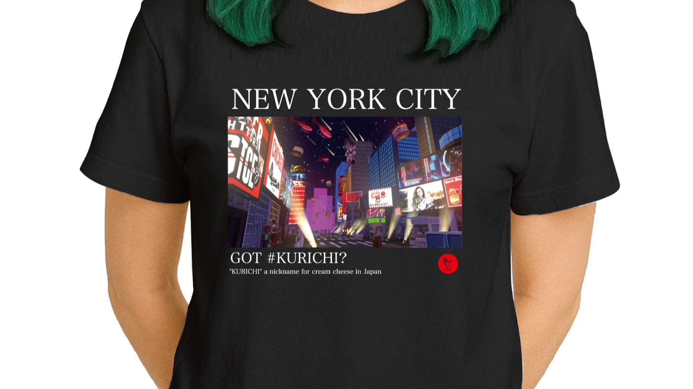

← Press Release 一覧へ
Vsw株式会社、経営体制強化のため新たに代表取締役を2名迎え入れ

Vsw株式会社は、経営体制の一層の強化を目的として、新たに代表取締役2名を迎え入れたことをお知らせいたします。 今後、複線的な意思決定体制を整え、「#クリチ」ブランドの国内外展開を加速させてまいります。
招聘の背景
Vswは、「クリームチーズバーガー = #クリチ」という新しい食の物語を、リアル店舗・催事・自動販売機・メタバースなど、人が集まるあらゆる場所に届けるブランドとして急速に成長しています。事業の多面化に伴い、食品・ブランド・デジタル・海外展開・ファイナンスといった各領域で専門性を発揮できる経営チームへの進化が重要な課題となっていました。
このたびの代表取締役2名の招聘は、社内の組織力とガバナンスを強化し、中長期の事業計画を着実に実行するための布石です。複数代表制を採用することで、意思決定の速度と質の両立を図り、各領域の強みを最大化する体制を構築します。
新体制の狙い
- 事業ポートフォリオの多様化：食品製造・直営店・催事・OEM・メタバース・海外展開を、それぞれの責任者がリード
- ブランド価値の守護：「#クリチ」の世界観を各チャネルで崩さない、一貫したブランドガイドラインの整備
- パートナーシップの加速：国内外の法人・自治体・メディア・クリエイターとの協業を、機動的に推進できる体制
- 人材登用・育成：クリエイティブ／プロダクション／マーケティングの各領域における採用と育成を強化
中期方針
新経営体制では、以下の3点を中期の重点テーマとして位置付けます。
- 旗艦店舗の出店：ブランド体験を最も濃密に提供できる直営店を、主要都市に段階的に展開
- 海外市場の開拓：中国をはじめとするアジア圏でのパートナーシップを軸に、ブランド輸出を本格化
- デジタル×リアルの融合：メタバース「KURICHI LAND」と実店舗を結ぶ、ハイブリッドな顧客体験の確立
Vswの強みは、一つひとつのバーガーに、物語と遊び心を詰め込むこと。新体制でも、その原点を守りながら、挑戦のスケールを一段引き上げていきます。
今後の情報公開について
新任代表取締役のプロフィール、役割分担、中期経営計画の詳細については、別途、公式プレスリリースおよびVSW公式YouTubeにて順次ご案内いたします。
本件に関するお問い合わせ
取材・インタビュー・メディア掲載のご相談は、お問い合わせフォーム までお寄せください。